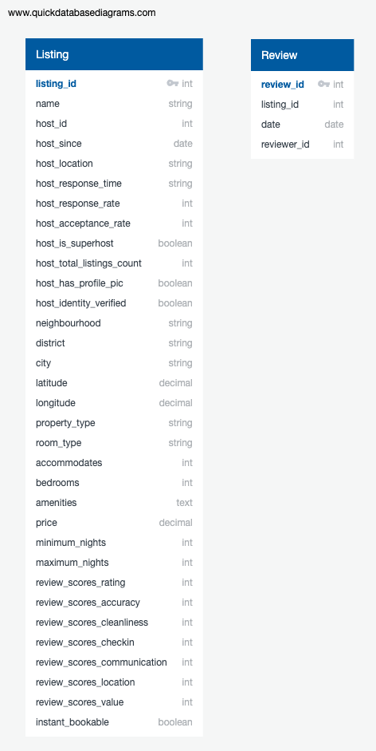
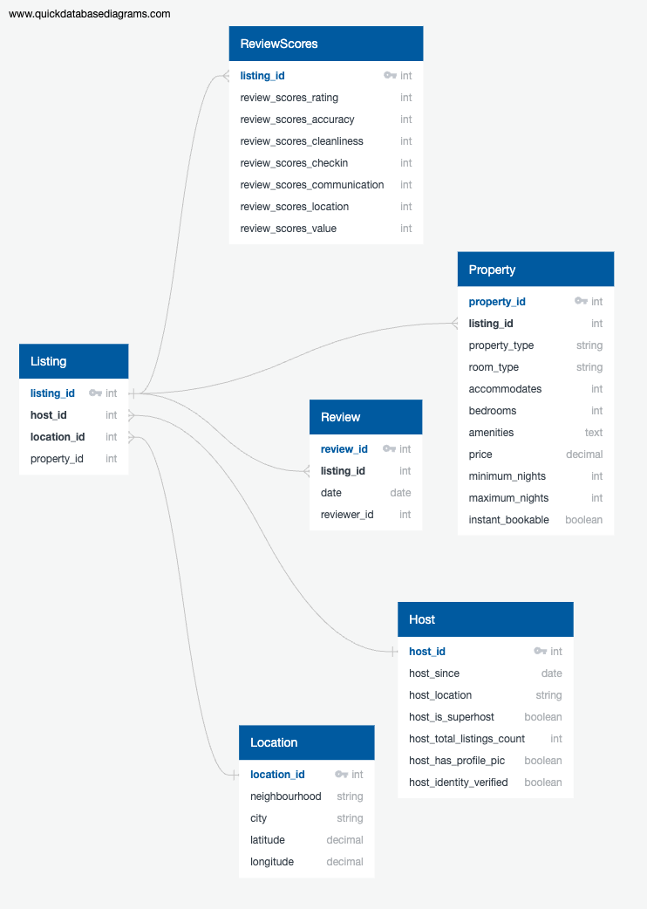

Airbnb SQL Analysis
An SQL-driven analysis of Airbnb listings, focusing on SQL and data analysis skills highlighting key market insights.
The code repository for this project can be found here.
Project Overview & Background
This project is focused on developing my skills in data analysis and SQL using a large dataset of Airbnb listings. The dataset, sourced from Maven Analytics, includes information on over 250,000 listings across 10 major cities, along with more than 5 million historical reviews. My objective was to organise and clean this dataset to enable efficient analysis, ultimately enhancing my proficiency in data management, SQL query optimisation, and data visualisation.
The initial dataset was provided as a single, large CSV file, which presented challenges in terms of size and data quality. To address these issues, I decided to split the data into several normalised tables: Host, Location, Property, ReviewScores, Listing, and Review. These tables were designed to capture the essential aspects of the dataset while reducing redundancy and improving query efficiency.
As I began to work with the data, it became clear that the dataset was too large and unclean to manage effectively in its entirety. To tackle this, I decided to work with a subset of 500 rows, which allowed me to focus on cleaning and organising the data before scaling up. During this process, I encountered a challenge with the review data. The reviews CSV file contained a vast number of entries, many of which were not relevant to the listings I had in my database. To solve this, I wrote a Python script that scans all listing IDs from the database and cross-references them with the review IDs in the reviews CSV file, saving only the relevant reviews. This approach ensured that my database remained focused and manageable.
Initially, I had planned to load the entire dataset into the database and then split it into the new tables using SQL queries. However, this approach proved to be inefficient and cumbersome. Instead, I revised my strategy: I created a database schema that reflected the final normalised structure, and then split the data into new, separate CSV files that mimicked this structure. After preparing these files, I imported them directly into the corresponding tables in the database. This method proved to be much more efficient and ensured that the data was correctly formatted from the start.
With the database now structured and populated, I identified ten key pieces of information that I wanted to extract from the data. These also served to test if my database was correctly normalised and if my SQL queries were optimised. The questions included:
- Who are the most active hosts with the highest number of listings?
- What is the percentage of superhosts in the dataset?
- Which neighborhoods have the highest number of Airbnb listings?
- What is the average price of Airbnb listings in different neighborhoods?
- What is the distribution of room types across all listings?
- How do average prices vary across different property types?
- What are the average review scores for different aspects like cleanliness, communication, and value?
- Which Airbnb listings have the highest overall review scores?
- How do prices vary seasonally across different times of the year?
- How has review activity changed over the years?
The next step in this project is to create a comprehensive dashboard that visualises these insights. The dashboard will showcase my ability to transform raw data into actionable knowledge, demonstrating my proficiency in SQL and data visualisation tools.
Image Gallery

Initial Database Schema - The first design before normalisation.

Updated Database Schema - The final structure after splitting the dataset into normalised tables.